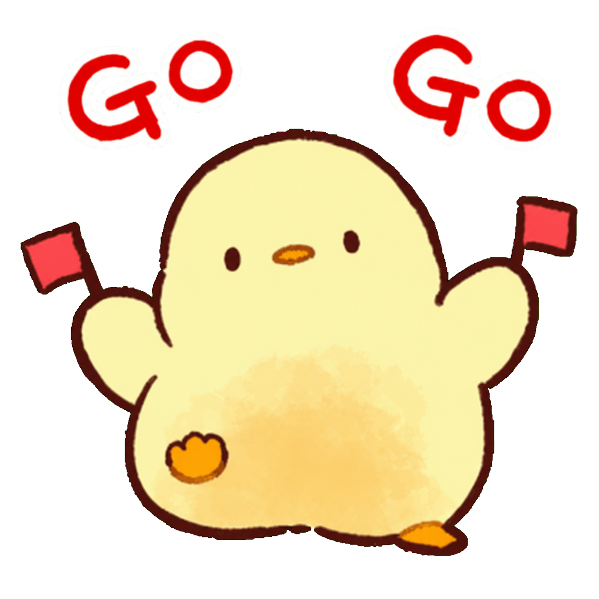
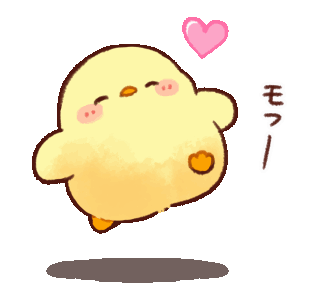
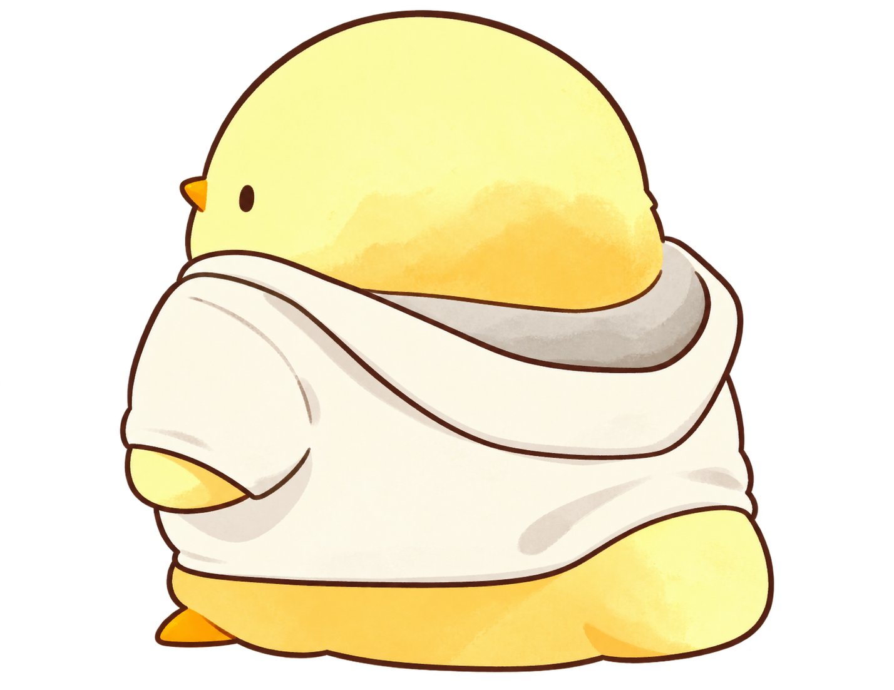

CRUZA SIN MIRAR ATRÁS
CRASH CHICKEN
PUNTOS0
RÉCORD0
¡LLEGADA!
INICIO


¡Crash Chicken!
Usa las flechas o WASD para cruzar.

¡Pasaste al Nivel 2!
Pulsa ENTER para comenzar
¡LLEGADA!
INICIO

¡Crash Chicken!
Toca, desliza o usa las flechas para cruzar.
Recoge maíz (+25). Pulsa R para reiniciar.